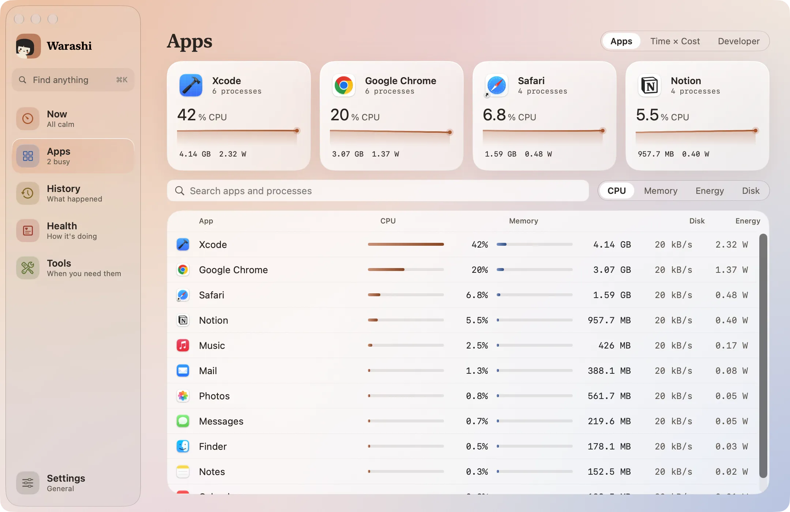
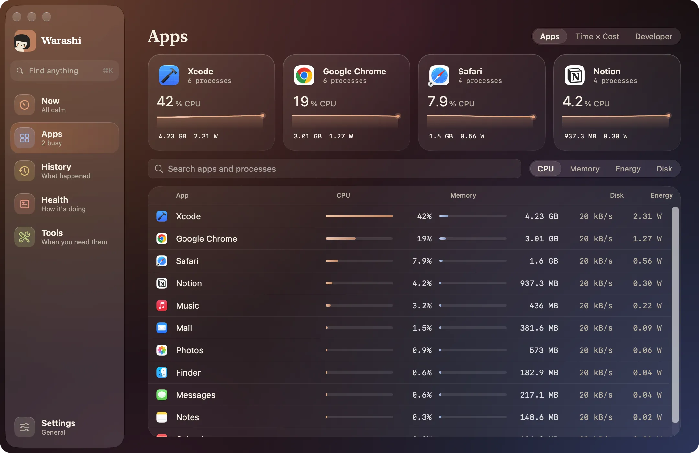
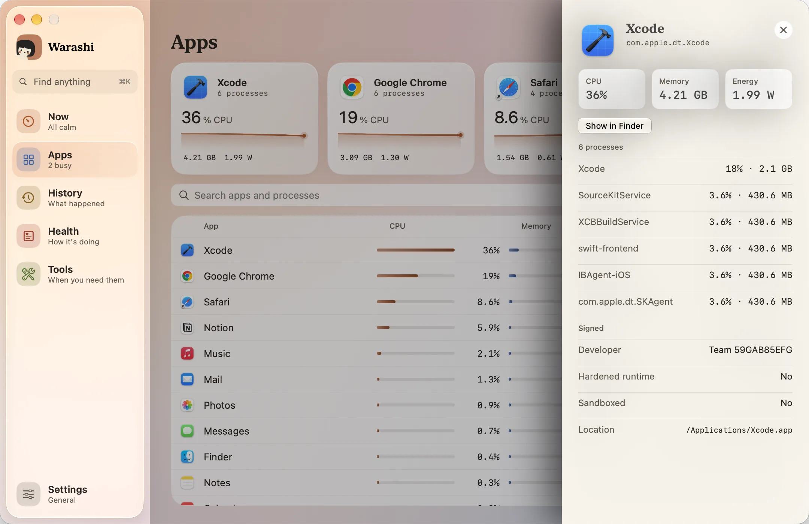
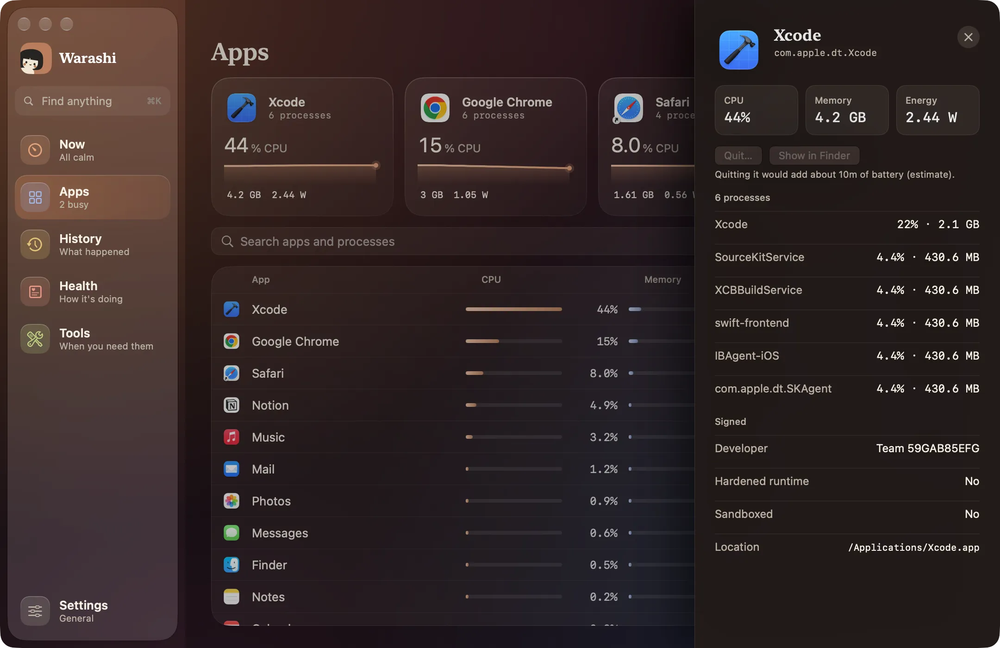

Apps montre ce que coûte chaque app en ce moment, avec ses processus d’assistance regroupés dessous (Chrome tient donc en une ligne, pas vingt).
- Ouvrir Apps
Choisissez Apps dans la barre latérale ou appuyez sur ⌘2. Les quatre apps les plus actives s’affichent en haut sous forme de cartes avec leur dernière minute ; elles ne changent de place que lorsque le classement évolue nettement.


- Rechercher ou trier
Saisissez dans Rechercher des apps et des processus pour trouver une app ou un processus par son nom. Utilisez CPU, Mémoire, Énergie et Disque pour trier la liste.
- Ouvrir le tiroir d’une app
Cliquez sur une app. Son tiroir indique le CPU, la mémoire et l’énergie, chaque processus qu’elle exécute, qui l’a signée (Apple, une équipe de développement ou ad hoc), si elle utilise le runtime renforcé, et où elle se trouve sur le disque.
Quitter… demande à l’app de se fermer normalement, afin qu’elle enregistre votre travail. Afficher dans le Finder vous y amène. Sur batterie, une ligne estime le temps que sa fermeture ajouterait.


- Examiner un processus
Cliquez sur un processus dans le tiroir pour voir comment il a été lancé : ligne de commande, parent, utilisateur, heure de démarrage et tâche de lancement. Appuyez sur Échap ou cliquez à l’extérieur pour fermer le tiroir.
Why is Warashi in the list?
Because it's honest. Warashi measures itself like any other app and shows the result, marked this window: while its window is open it redraws live numbers, so it costs a few percent of one core, and it drops back to a fraction of a percent when you close it. It never appears in the busiest-apps cards or the menu bar window's rankings, so its own window can't look like the culprit.